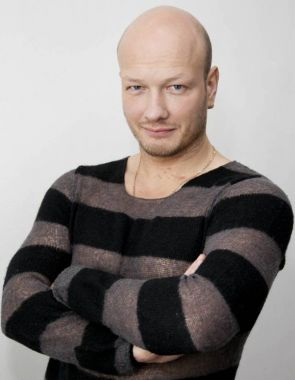

Никита Панфилов Владиславович
Родился 30 апреля 1979 года в Москве, в театральной семье.
Отец — Владислав Панфилов Владимирович, руководитель московского «Театра охочих комедиантов», доцент
Академии повышения квалификации работников искусства, культуры и туризма. Мать — режиссёр в Московском
театре «Монотон».
В возрасте пяти лет выступал на сцене в роли Ивана-царевича в одной из детских постановок, а в четырнадцать
лет — Деда Мороза. В московской средней школе № 809 занимался в секции греко-римской борьбы. К восьмому классу стал мастером
спорта и вошёл в олимпийский резерв юношеской сборной страны.
Окончив среднюю школу в 1996 году, поступил на актёрский факультет Института современного искусства в
Москве. Затем прошёл военную службу по призыву в рядах Вооружённых сил России. После службы подал документы
сразу в несколько московских высших театральных учебных заведений.

В 2002 году поступил, а в 2006 году окончил актёрский факультет Школы-студии МХАТ в Москве (руководители
курса — Игорь Золотовицкий и Сергей Земцов), после чего был принят в труппу Московского Художественного
театра имени А. П. Чехова, где, будучи студентом, в 2003 году дебютировал в роли Икара в спектакле «Осада»
Евгения Гришковца. Прослужил в МХТ имени А. П. Чехова десять лет (2006—2016)